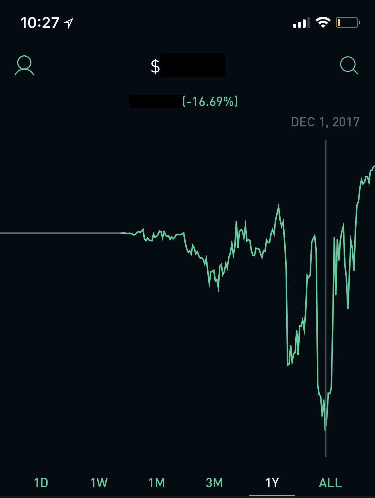
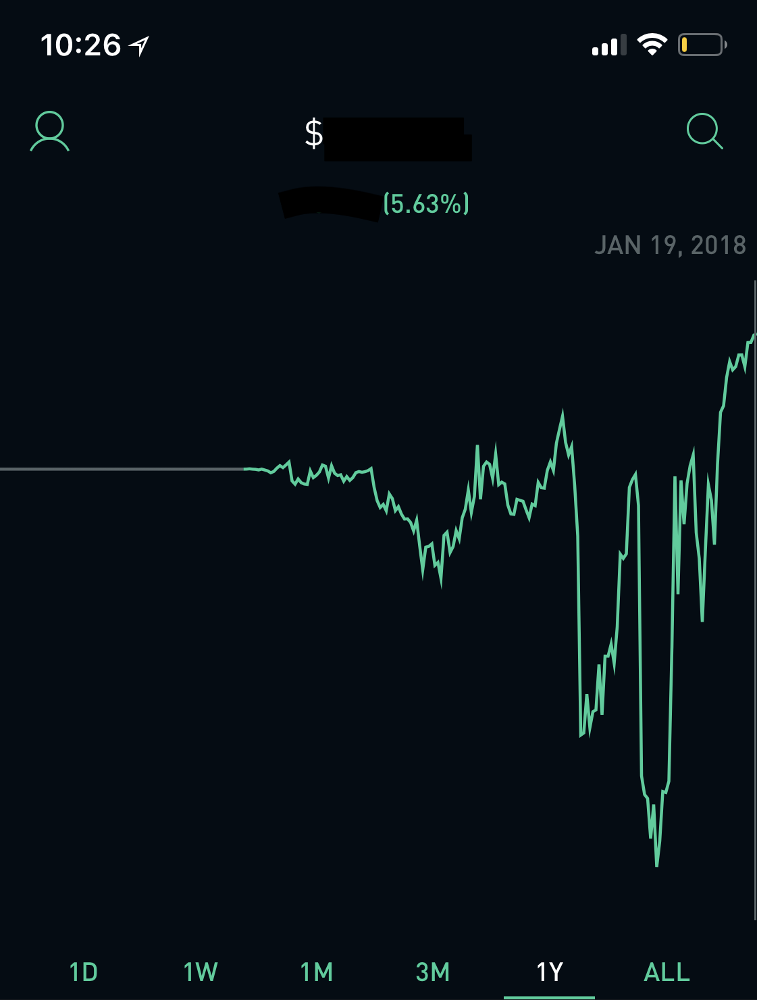

My account dipping below 16%. A low point in my life to say the least.
This is how my account looked about 6 weeks ago. Yup, I was down more than 17% on December 1st, 2017. The account that holds more money than my checking account. I basically just took everything I had worked for and just Venmo’d someone 17% of what I had saved up for the past last 8 months. I was getting really stressed out and serious anxiety to the point that I would obsessively check my account. But what happened?
But first, let’s back up. I’m extremely compulsive when it comes to money. I check my Robinhood investing account numerous times a day. I am distressed when the stock market is closed due to a holiday like Martin Luther King day. I just want to see the money go up! It’s so fun! I don’t do anything, and the money just grows. What’s not to like there? I’m literally getting free money.
Since that low point, I’ve managed to get back to even, and more importantly, have a consistent gain. Now I’m up more than 5.50%. But what did I learn?

My account yesterday. No more stress.
- Have the majority of your holdings in the S&P500. The Standard’s and Poor’s 500 has bits and pieces of the world’s 500 most successful companies. This is automatically diversifying for you. It’s extremely stable, and unless there is a huge crash, your money is safe from dropping to extreme levels as shown above.
- Diversify, diversify, diversify. The reason why I was down more than 15% was because I had all my money in one, small-cap company (around 1.5 billion). Sure, if I held my money in that same holding, I would have been up WAY more, since that stock has performed extraordinarily well in the last few weeks, BUT I’m really not okay with taking that much risk. What if I had lost 20% of my money? or 50%? That would be terrible. I’d much rather be up 5 or 6% consistently than have the off-chance of being down 50%.
- Be patient. After reading stats from the Intelligent Investor, there is obvious evidence showing that the less investors sell, the higher their earnings. It’s pretty simple. You have to be patient to make gains. Nobody ever got rich day-trading. (Unless it’s crypto).
- Divide your portfolio somewhat evenly between at least 5 sectors. My favorites in order are tech, aerospace, healthcare, industrials, and the financials. The easiest way to avoid huge crashes in your holdings is to eliminate sector risk.
- Invest in companies you love. Know what the company does, listen to the conference calls, read news about the company. Make sure you know where you are putting your money.
- If you have some sort of employee stock program (where your employer offers discounts or bonuses by investing in your own company’s stock), use it. Of course, make sure that you believe in your company, but ideally you work at a company you believe in and love.
- Invest in FBAANG. Facebook, Boeing, Apple, Amazon, Netflix and Google. These companies are extremely hot and show no signs of slowing down. Of course, do your own research first, it’s your money, not mine. But as a rule of thumb, these companies are more or less pretty safe investments at the time of this article.
- Find a source of investing news to learn from every day. I listen to Jim Cramer’s Mad Money every morning on my commute to work or whenever I have to do some boring task such as put away my laundry or clean my room. Motley Fool is good too, but that one doesn’t come out with new podcasts every day. I simply subscribe and get alerts when Mad Money comes out each day. It comes out around 5:30 P.M. for me, so I know it’s probably about time to leave the office around that time.
- Buy in 25% increments. If you want to buy 4 stocks in Facebook, then buy 1 and then wait a little, and then buy again when you see an attractive price. The reason being is that we’re all just speculating. We can’t predict the future. Sure, you might think that it’s going up only, but what if you buy all at once and it goes down? I’d rather reduce my risk and buy in smaller increments. Sure, I might lose out on some gains, but I’d rather do that than risk large losses.
- Have fun. For me, investing is a mental game. Like tennis. I try to train as much as I can by reading articles and talking to others about companies and their financials.
- Check the financials of companies you like and make sure they have positive double-digit growth in at least 3 out of the 4 key ratios. Return on invested capital, Earning per share, book value per share, and free cash flow.
“Bulls make money, bears make money, pigs get slaughtered” — Jim Cramer
I really like this quote because it reminds me to stay true to the process. To make sure to lock up gains before it’s too late. To stay humble. It’s helped me a lot.
Ok, I’m not perfect, and I only started my account in early May of last year. I think to learn, you have to have your skin in the game. I firmly think that when you have put your own hard-earned money into a company, you’ll be motivated to do the research — nobody and I mean no-one wants to lose their hard-earned money.
If you take anything away from this article, it would be to get the S&P, diversify between different sectors and portfolio percentage, invest in FBAANG and companies you love. Good luck out there, and don’t be a pig.